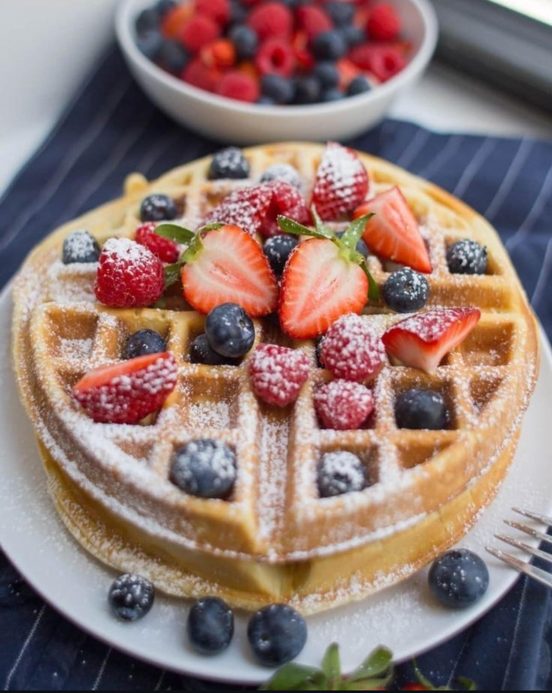

En Ñam, Ñam Wafles no son solo waffles... ¡son toda una experiencia!
Cada bocado es una explosión de sabor, textura y alegría. Con ingredientes únicos, sabores innovadores.
Son ideales para cualquier momento del día: ya sea desayuno, merienda o cuando el antojo aparece. Y lo mejor de
todo... ¡hay un sabor que se adapta a cada personalidad! 🍓🍫
Ingredientes para preparar los waffles mas epícos
2 tazas de harina mágica.
2 cucharadas de azúcar de nube.
1 cucharadita de polvo para hornear, bien poderoso.
1/2 cucharadita de canela en polvo.
1 pizca de sal con mucho flow.
2 huevos bien felices.
1 taza y media de leche de unicornio.(o de la común si no tenés)
1/4 de taza de manteca, previamente derretida por el Dios del fuego.
1 chorrito de esencia de vainilla legendaria
¿Y comó se ven estos estos ñam waffles?

Variedades Ñam, Ñam
Wafle Arcoiris: con confites y glaseado de frutilla.
Wafle de Nutella & Banana: una combinación clásica y muy tentadora.
Wafle Chocorramito un baño de chocolate muy crocante
Wafle ÑamBurguer con queso Cheddar, panceta y pepinillos.
Wafle Místico:Sabor sorpresa del día.
Paso a paso para hacer el mejor wafle del mundo:
En un bol grande, mezclá los ingredientes secos con alegría.
Agregá los huevos, leche, manteca y la esencia legendaria.
Batí todo hasta obtener una mezcla mágica y sin grumos.
Encendé tu waflera y dejala calentar hasta que te guiñe un ojo.
Verté la mezcla y esperá el aroma celestial.
Serví con toppings locos: frutas, dulce de leche, helado o lo que tu alma te pida.